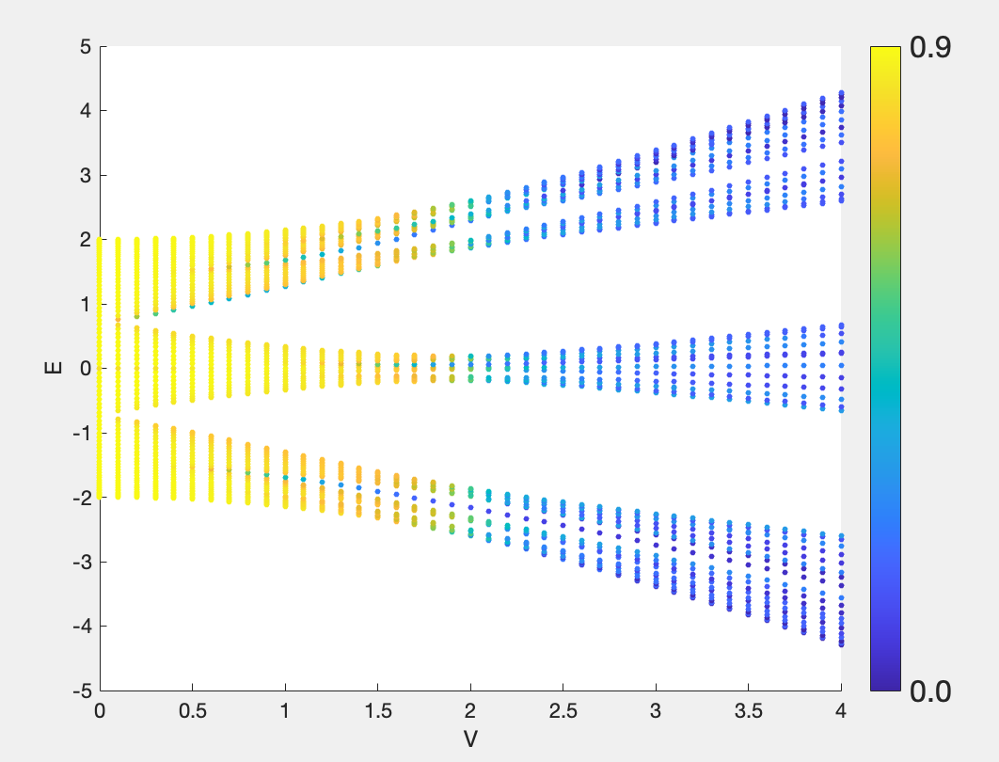

Quasiperiodic Systems I
1. Introduction
A quasiperiodic model generally refers to a model of the form \begin{align} H = \sum_i (t_i c_i^{\dagger} c_{i+1} + {\rm H.c.}) + v_i c_i^{\dagger} c_i , \label{eq1} \end{align} where neither $t_i$ nor $v_i$ is random as in the Anderson model, yet neither possesses ordinary lattice translational symmetry. Taking the latter as an example, we fix $t_i = t$ and choose $v_i$ to be a quasiperiodic potential, such as $v_i = \lambda {\rm cos}(2 \pi \beta i + \phi)$, where $\beta$ is irrational and is commonly chosen as $\dfrac{\sqrt{5} - 1}{2}$. Because $\beta$ is irrational, the full chain has no period, although different lattice sites are not entirely uncorrelated. The on-site energies can be viewed as a correlated sequence of pseudorandom numbers. Localized states then appear within certain parameter regimes.
2. Self-duality
The quasiperiodic potential $v_i = \lambda {\rm cos}(2 \pi \beta n + \phi)$ was first proposed by Aubry and André and is therefore commonly known as the AA model. It was later recognized as being essentially related to the two-dimensional Harper model, so it is also called the AAH model. One particularly interesting property of the AAH model is its self-duality: at a specific parameter value, its Hamiltonian has the same form in real and reciprocal space. In other words, starting from the real-space AAH Hamiltonian \begin{equation} H = -t \sum \limits_n (a_n^\dagger a_{n + 1} + {\rm H.c.}) - V \sum \limits_n {\rm cos}(2\pi \alpha n)a_n^\dagger a_n \end{equation} and applying the Fourier transform \begin{equation} b_k = \frac{1}{\sqrt{N}} \sum \limits_n e^{i k (2 \pi \alpha n)}a_n \end{equation} gives the momentum-space Hamiltonian \begin{equation} H = -\frac{V}{2} \sum \limits_k (b_k^\dagger b_{k + 1} + {\rm H.c.}) - 2t \sum \limits_k {\rm cos}(2\pi \alpha k)b_k^\dagger b_k \end{equation} It is then straightforward to see that, when $|V| = 2|t|$, the AAH model has the same form before and after the Fourier transform.
3. Self-dual Point and the Localization Transition
For the standard AA model, self-duality identifies the localization-transition point in parameter space. The Fourier transform interchanges hopping and the quasiperiodic potential between real and dual space. Consequently, all eigenstates are extended when $|V|<2|t|$, all are localized when $|V|>2|t|$, and all are critical at $|V|=2|t|$. Eigenstates at all energies undergo the transition simultaneously, so there is no energy-dependent mobility edge separating extended and localized states within the same spectrum. Generalized quasiperiodic models can host genuine mobility edges, but these require additional structure and cannot be inferred from self-duality alone.
This behavior differs fundamentally from localization in the conventional Anderson model. In one dimension, arbitrarily weak uncorrelated random disorder localizes every single-particle state. A quasiperiodic potential, by contrast, is deterministic and long-range correlated, so the one-parameter scaling conclusions for random disorder do not apply directly. The system can therefore support extended states and a localization transition at finite potential strength.
4. Code
The following simple Matlab program evaluates the localization properties of AAH eigenstates.
% calculate D2/IPR versus E and V of AA model
% Date: 2024/03/25 more information in notebook: note10, 20240317
clear; clc; close all;
start_time = tic;
% Parameters
it = 10; % iteration
[Fn1, Fn] = Fibonacci(it);
L = Fn;
t = 1;
V_sec = 0 : 0.1 : 4;
alpha = Fn1 / Fn;
theta = 0;
h = 0;
phi = theta + 1i * h;
p = 0; % p = 0 for open boundary conditions and p = 1 for pbc
%%
% Section: calculate
%-----------------------------------------------------------------------------------------------------------
evals_total = [];
IPR_map = [];
for V = V_sec
fprintf('V = %f\n', V);
% Generate the hamiltonian of H1
H1 = hami(L, t, V, alpha, theta, h, p);
% Calculate its eigenenergies and wavefunction and sort the eigenenergies
[vec1,E1] = eig(H1);
[E1,index_1] = sort(real(diag(E1))); % remind the function sort(E1): here E1 should be 1*N not N*N !!!
vec1= vec1(:,index_1);
evals_total = [evals_total, E1];
%-------------------------normalizing-------------------------------
for a = 1 : 1 : size( vec1, 1 )
vec_zero = vec1( 1 : size(vec1, 1), a);
vec_uni(:,a) = ( real( vec_zero ).^2 + imag(vec_zero).^2) / sum( real(vec_zero).^2 + imag(vec_zero).^2 );
end
% calculate IPR and MIPR
for a = 1:1:size(vec1,1)
IPR(a, 1) = sum( vec_uni(:,a).^2 );
end
IPR_map = [IPR_map, IPR];
end
% finite-size estimator; a strict D2 requires scaling with several L
D2_map = -log(IPR_map) / log(Fn);
end_time = toc(start_time);
fprintf('运行时间（秒）= %f\n', end_time);
%%
% Section: plot
%-----------------------------------------------------------------------------------------------------------
figure();
for a = 1 : size(V_sec, 2)
X(a * size(evals_total, 1) - size(evals_total, 1) + 1 : a * size(evals_total, 1)) = V_sec(a);
end
X = X';
for a = 1 : size(V_sec, 2)
Y(a * size(evals_total, 1) - size(evals_total, 1) + 1 : a * size(evals_total, 1)) = evals_total(:,a);
end
Y = Y';
for a = 1 : size(V_sec, 2)
D2_plot(a * size(evals_total, 1) - size(evals_total, 1) + 1 : a * size(evals_total, 1)) = D2_map(:,a);
end
D2_plot = D2_plot';
%colormap hot(summer,winter)
colormap default
scatter(X,Y,10,D2_plot,'filled')
% set colorbar
colorbar
c = colorbar;
c.FontSize = 16;
c.Ticks = linspace(min(D2_plot(:)), max(D2_plot(:)), 2); % 设置刻度位置
c.TickLabels = arrayfun(@(x) sprintf('%.1f', x), c.Ticks, 'UniformOutput', false); % 设置刻度标签
%c.Position = [0.93, 0.4, 0.02, 0.2]; % [left, bottom, width, height]
xlabel('V');
ylabel('E')
%%
% Some functions
%-----------------------------------------------------------------------------------------------------------
function [Fn1, Fn] = Fibonacci(iterations)
Fn1 = 0;
Fn = 1;
for n = 1:iterations
Fn2 = Fn1;
Fn1 = Fn;
Fn = Fn1 + Fn2;
end
end
function H00 = hami(L, t, V, alpha, theta, h, p)
% on-site energy
for a = 1 : 1 : L
H00(a, a) = V * cos ( 2*pi*alpha*a + theta + 1i * h );
end
% hopping term
for a = 1 : 1 : L - 1
H00(a, a + 1) = t;
H00(a + 1, a) = t;
end
if (p == 1)
H00(1, L) = t;
H00(L, 1) = t;
end
% check the hermitian of H00
%if sum(sum(H00 ~= H00')) ~= size(H00,1)^2
% error('wrong, H00 should be hermitian');
%end
end
The result is shown below. Yellow denotes more extended states, whereas blue denotes more localized states, and the critical point can be seen near $V = 2t$. Here, $-\ln({\rm IPR})/\ln L$ is a finite-size estimate of the correlation dimension $D_2$ at a single system size; obtaining a rigorous $D_2$ requires scaling over multiple system sizes.
